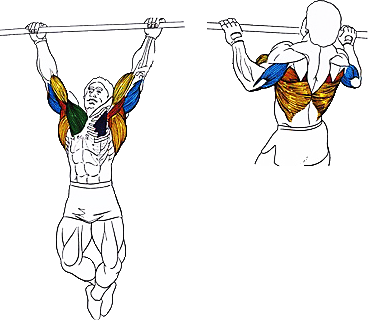

Правильные подтягивания на турнике положительно отразятся на развитии бицепса.
Исходное положение:
встать прямо.
Техника выполнения:
Подтянуться к турнику на вдохе.
Выпрямить руки на выдохе.
Рекомендации:
Подтягиваться можно как прямым хватом, так и обратным.
Для лучшей прокачки бицепса, при выполнении подтягиваний не рекомендуется распрямлять руки полностью.
Количество повторений: 10-15. Количество подходов: 3.